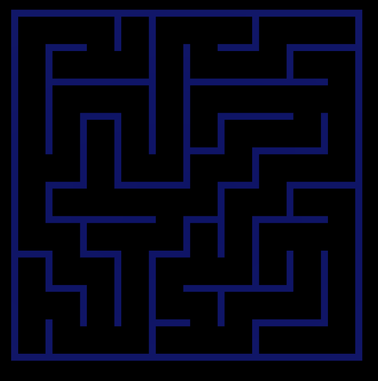

Randomly generated maze
For this project, I decided to create a Unity application that would be capable of randomly generating perfect maze, using a depth search approach. This means the generator will have 1 path that will keep extending on until it reaches points where it cannot find unused neighboring tiles anymore. Then it tracks back to tiles that still have available neighboring tiles until every tile in the grid has become visited. The maze needs to be perfect! That means it follows the following principles:
This C# code is Unity scripting for generating a perfect maze using a depth-first search algorithm.
It initializes a grid of maze cells and activates only the required cells based on the maze dimensions.
The GenerateMazeIterative method ensures every cell is visited once, creating a single path with no loops.
Walls between cells are cleared to form the maze structure. The code follows maze principles ensuring connectivity and no inaccessible areas.
Start Method: Initializes a grid of maze cells.
private void Start()
{
_mazeGrid = new MazeCell[250, 250];
for (int x = 0; x < 250; x++)
{
for (int z = 0; z < 250; z++)
{
_mazeGrid[x, z] = Instantiate(_mazeCellPrefab, new Vector3(x, 0, z), Quaternion.identity);
}
}
}
StartMaze Method: Activates required maze cells and resets the maze.
public void StartMaze()
{
//First undo the current active maze
for (int x = 0; x < 250; x++)
{
for (int z = 0; z < 250; z++)
{
MazeCell currentCell = _mazeGrid[x, z];
currentCell.gameObject.SetActive(false);
}
}
//Then, set the required mazecells active based off the set _mazeWidth and _mazeHeight
for (int x = 0; x < _mazeWidth; x++)
{
for (int z = 0; z < _mazeDepth; z++)
{
MazeCell currentCell = _mazeGrid[x, z];
currentCell.gameObject.SetActive(true);
currentCell.ResetBlock();
}
}
_cameraManager.CalculateOrthoSize();
GenerateMazeIterative(_mazeGrid[0, 0]);
}
GenerateMazeIterative Method: Creates the maze using a depth-first search algorithm.
private void GenerateMazeIterative(MazeCell startCell)
{
Stack usedCells = new Stack();
Stack activeCells = new Stack();
activeCells.Push(startCell);
while (activeCells.Count > 0 || usedCells.Count > 0)
{
MazeCell currentCell;
//Prioritize the current active path.
if (activeCells.Count > 0)
{
currentCell = activeCells.Pop();
currentCell.Visit();
//check for unvisited cells next to the current cell
IEnumerable unvisitedCells = GetUnvisitedCells(currentCell);
//randomize which possible way to go.
MazeCell nextCell = unvisitedCells.OrderBy(_ => Random.Range(1, 10)).FirstOrDefault();
if (nextCell != null)
{
ClearWalls(currentCell, nextCell);
activeCells.Push(nextCell);
usedCells.Push(currentCell);
}
}
//If the Active path does not have any directions to go to, the algorithm will track back through the usedCells Algorithm.
else
{
currentCell = usedCells.Pop();
IEnumerable unvisitedCells = GetUnvisitedCells(currentCell);
MazeCell nextCell = unvisitedCells.OrderBy(_ => Random.Range(1, 10)).FirstOrDefault();
if (nextCell != null)
{
ClearWalls(currentCell, nextCell);
activeCells.Push(nextCell);
}
}
}
}
GetUnvisitedCells Method: Returns a list of unvisited neighboring cells.
private IEnumerable GetUnvisitedCells(MazeCell currentCell)
{
int x = (int)currentCell.transform.position.x;
int z = (int)currentCell.transform.position.z;
// Define a list to store unvisited neighboring cells
List unvisitedNeighbors = new List();
// Check if the X position to the right is within the Grid and is unvisited
if (x + 1 < _mazeWidth && !_mazeGrid[x + 1, z].IsVisited)
{
unvisitedNeighbors.Add(_mazeGrid[x + 1, z]);
}
// Check if the X position to the left is within the Grid and is unvisited
if (x - 1 >= 0 && !_mazeGrid[x - 1, z].IsVisited)
{
unvisitedNeighbors.Add(_mazeGrid[x - 1, z]);
}
// Check if the Z position to the front is within the Grid and is unvisited
if (z + 1 < _mazeDepth && !_mazeGrid[x, z + 1].IsVisited)
{
unvisitedNeighbors.Add(_mazeGrid[x, z + 1]);
}
// Check if the Z position to the back is within the Grid and is unvisited
if (z - 1 >= 0 && !_mazeGrid[x, z - 1].IsVisited)
{
unvisitedNeighbors.Add(_mazeGrid[x, z - 1]);
}
// Shuffle the list of unvisited neighbors to randomize the order
unvisitedNeighbors = unvisitedNeighbors.OrderBy(_ => Random.Range(0, 100)).ToList();
return unvisitedNeighbors;
}
ClearWalls Method: Clears walls between adjacent cells to form the maze path.
private void ClearWalls(MazeCell currentCell, MazeCell nextCell)
{
//First checks if there even is a previous cell.
if (currentCell == null)
{
return;
}
//Checks what position the currentCell is from the previousCell and uses Methods from MazeCell.cs to disable the proper parts of the MazeCell to shape it accordingly.
if (currentCell.transform.position.x < nextCell.transform.position.x)
{
currentCell.ClearRightWall();
nextCell.ClearLeftWall();
return;
}
if (currentCell.transform.position.x > nextCell.transform.position.x)
{
currentCell.ClearLeftWall();
nextCell.ClearRightWall();
return;
}
if (currentCell.transform.position.z < nextCell.transform.position.z)
{
currentCell.ClearFrontWall();
nextCell.ClearBackWall();
return;
}
if (currentCell.transform.position.z > nextCell.transform.position.z)
{
currentCell.ClearBackWall();
nextCell.ClearFrontWall();
return;
}
}